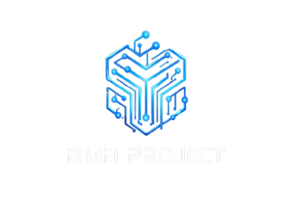
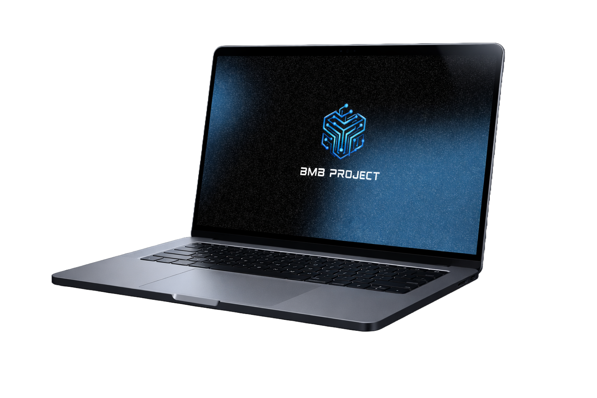

BMB ProjectBMB Project to nakładka - zaprojektowana na bazie systemu Ubuntu, aby Twój komputer był łatwiejszy w użyciu.

Działa płynnie nawet na starszych komputerach.
Zbudowany z myślą o bezpieczeństwie i prywatności.
Znajome środowisko dla każdego użytkownika.
Pobierz plik ISO z zainstalowaną wersją BMB Project
Pobierz repozytorium ze skryptem który automatycznie zainstaluje BMB Project